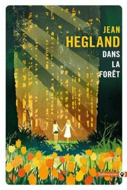
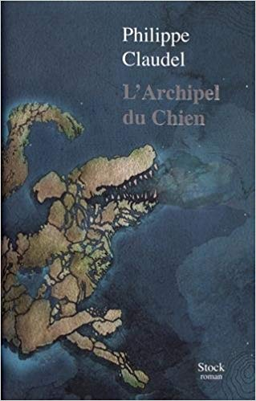
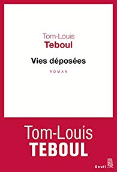
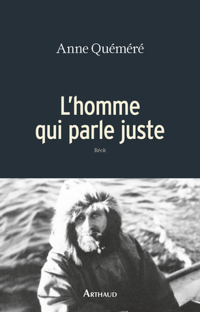
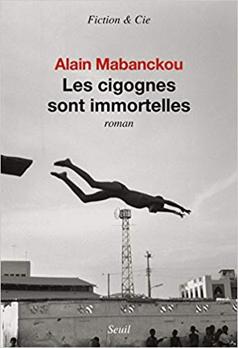

- Dans la Forêt 
- L'Archipel du chien 
- Vies Déposées 
- L'Homme qui parle juste 
- Les Cigognes sont immortelles 
Dans la foret est un livre qui a été écrit par Jean Hegland et qui a été traduit par Josette Chicheportiche. On y découvre l'aventure exaltante de Nell et Eva, qui ont respectivement 17 et 18 ans. Elles ont vécues toute leur vie dans une maison au coeur de la forêt et se rendaient très rarement en ville. Malheureusement, lorsque la civilisation s'effondre et leurs parents avec, les deux héroïnes se retrouvent seules au milieu de la forêt et doivent apprendre a vivre toutes seules sans parents, sans électricité et sans essence. Heureusement , avant que le monde ne s'effondre, les protagonistes et leur père se rendent en ville et font des réserves substantielles. Réussiront-elles à accomplir leur rêves? Réussiront-elles à survivre dans un monde qu'elles découvrent?
Le dimanche qui suivit, différents signes annoncèrent que quelque chose allait se produire. Ce fut déjà et cela dès l'aube une chaleur oppressante, sans brise aucune. L'air semblait s'être solidifié autour de l'île, dans une transparence compacte et gélatineuse qui déformait ça et là l'horizon quand il ne l'effaçait pas : l'île flottait au milieu de nulle part. Le Brau luisait de reflets de meringue. Les laves noires à nu en haut des vignes et des vergers frémissaient comme si soudain elles redevenaient liquides. Les maisons très vite se trouvèrent gorgées d'une haleine éreintante qui épuisa les corps comme les esprits. On ne pouvait y jouir d'aucune fraîcheur. Puis il y eut une odeur, presque imperceptible au début, à propos de laquelle on aurait pu se dire qu'on l'avait rêvée, ou qu'elle émanait des êtres, de leur peau, de leur bouche, de leurs vêtements ou de leurs intérieurs. Mais d'heure en heure l'odeur s'affirma. Elle s'installa d'une façon discrète, pour tout dire clandestine.
Au jour le jour, la vie dans la rue de trois personnages, deux hommes, une femme : la faim, le froid, la drogue et l'alcool. Les lieux de leur refuge sont les abords des superettes où ils font la manche. Les trois amis, dont l'esprit flotte entre oubli et rêverie d'un jour meilleur, errent dans la capitale à la recherche d'un chien perdu, un chow-chow, gros lion à la langue bleue, en espérant la belle récompense mentionnée sur l'annonce. À travers l'odyssée de ces existences désespérées, l'auteur a composé un portrait d'invisibles d'une grande force et d'une grande justesse, dévoilant de façon très romanesque la réalité sans fard d'un Paris méconnu et crépusculaire.
La première fois que j'ai posé le pied sur le sol dénudé des Territoires du Nord-Ouest, je ne savais pas ce que j'allais trouver. Alors que je déambulais dans le hameau de Tuktoyaktuk, j'arrivais devant un étonnant bateau en bois, à ses pieds une sépulture où un nom était inscrit, Father Robert Le Meur 1920-1985. Ma curiosité était piquée... Un Breton enterré à Tuktoyaktuk, il fallait que j'en sache plus. Très vite, je me retrouvai embarquée dans le sillage de ce jeune prêtre qui, au lendemain de la Seconde Guerre mondiale, avait quitté sa Bretagne natale pour s'engager jusqu'aux confins de l'Arctique auprès des Inuits. Ce pionnier, dur avec lui-même, va se mesurer à une nature impitoyable sans jamais renoncer à ses engagements. Et parce qu'en Arctique on n'a pas d'autre choix que «d'être ce que l'on est», ceux dont il partageait la vie le nommeront Oqayuyualuk, «l'homme qui parle juste». Luttant lorsqu'il le fallait, espérant toujours et ne renonçant jamais, son existence est un magnifique hommage à tous ceux qui défendent avec humilité et détermination les peuples les plus isolés de notre planète.
À Pointe-Noire, dans le quartier Voungou, la vie suit son cours. Autour de la parcelle familiale où il habite avec Maman Pauline et Papa Roger, le jeune collégien Michel a une réputation de rêveur. Mais les tracas du quotidien (argent égaré, retards et distractions, humeur variable des parents, mesquineries des voisins) vont bientôt être emportés par le vent de l'Histoire. En ce mois de mars 1977 qui devrait marquer l'arrivée de la petite saison des pluies, le camarade président Marien Ngouabi est brutalement assassiné à Brazzaville. Et cela ne sera pas sans conséquences pour le jeune Michel, qui fera alors, entre autres, l'apprentissage du mensonge. Partant d'un univers familial, Alain Mabanckou élargit vite le cercle et nous fait entrer dans la grande fresque du colonialisme, de la décolonisation et des impasses du continent africain, dont le Congo est ici la métaphore puissante et douloureuse. Mêlant l'intimisme et la tragédie politique, il explore les nuances de l'âme humaine à travers le regard naïf d'un adolescent qui, d'un coup, apprend la vie et son prix.